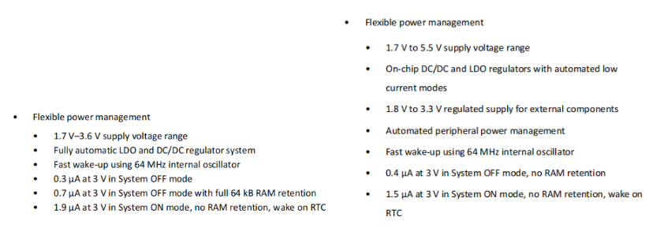
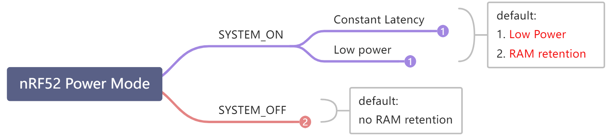
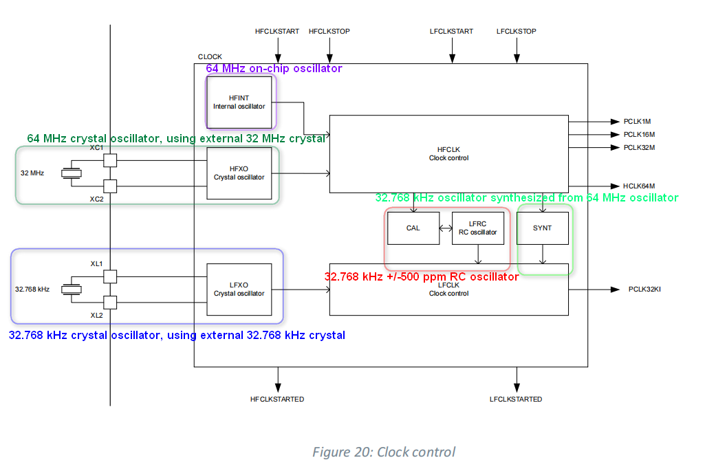
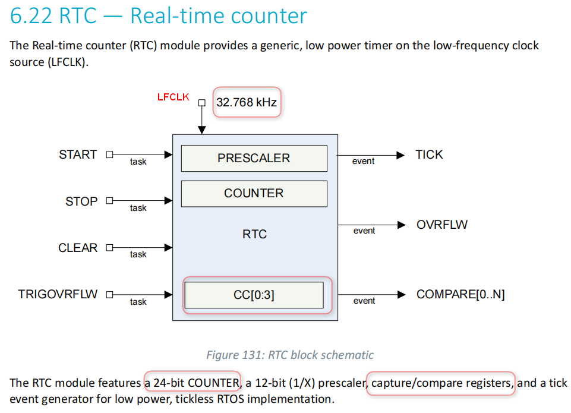
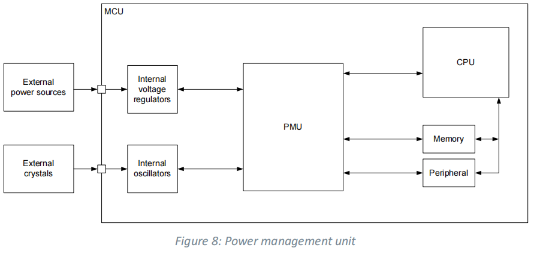
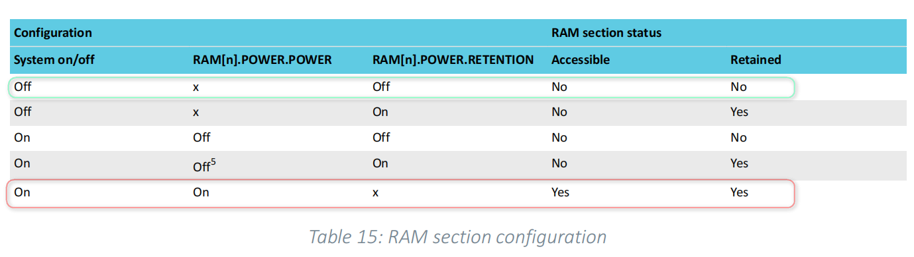
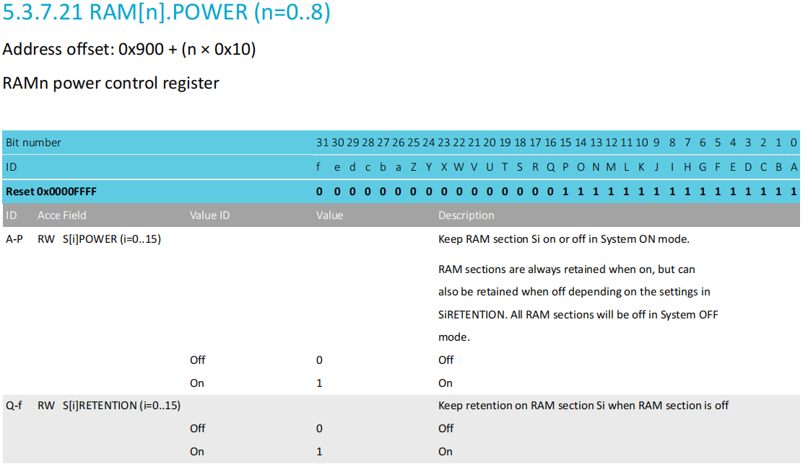
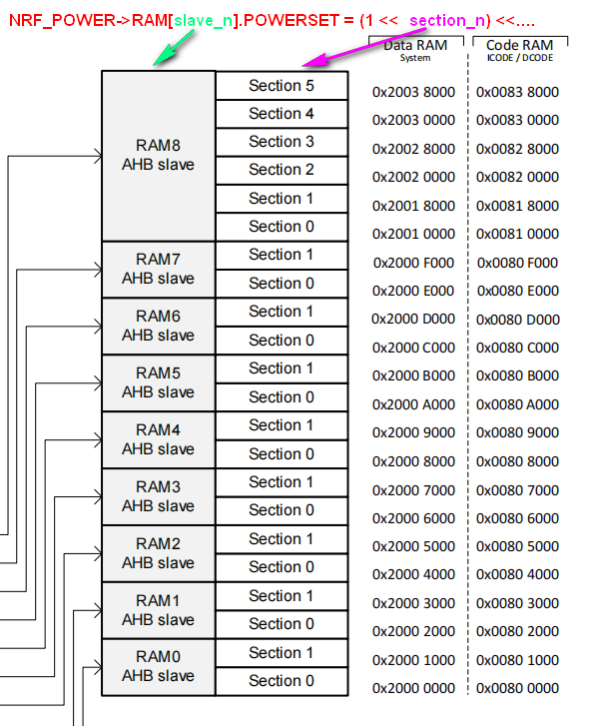
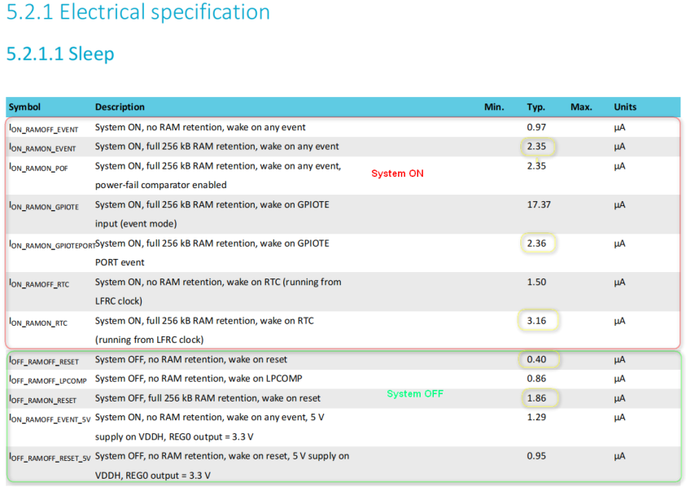
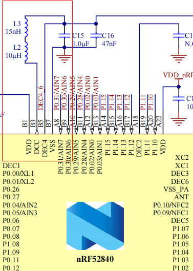

7. 1 前言
nRF52系列是一个面向低功耗蓝牙（BLE）的低功耗射频SoC，具有相对明确的应用场景，从nRF52用户功耗控制方式来看，nRF52芯片内部的功耗设计相对于STM32L等低功耗MCU来说，优化了电源功耗设计，简化了用户的功耗处理。  nRF52832电源管理特点 & nRF52840电源管理特点
8. 2 nRF52系列的低功耗相关硬件特性
8.1. 2.1 功耗模式
nRF52系列定义两种功耗模式：SYSTEM_ON 和 SYSTEM_OFF。其中SYSTEM ON又可分为两种电源子模式Constant Latency与Low Power 具体可参考nRF Product Specification ,如“nRF52840_PS_v1.2 5.3.3 System OFF mode、5.3.4 System ON mode”。

2.1.1 SYSTEM ON mode
nRF52840_PS_v1.2: 5.3.4 System ON mode System ON is the default state after power-on reset. In System ON mode, all functional blocks such as the RESETREAS on page 74 provides information about the source causing the wakeup or reset.
SYSTEM ON分为两种电源子模式(sub-power mode)：
Constant Latency
在 Constant Latency子模式下，CPU唤醒延迟和PPI任务响应保持恒定并保持最低，代价是增加了功耗(通过强制在睡眠中打开一组基本资源来确保这一点)。
通过触发CONSTLAT任务选择Constant Latency子模式：
- nrf_power_task_trigger(NRF_POWER_TASK_CONSTLAT) 或者 - NRF_POWER->TASKS_CONSTLAT = 1
Low-power
在Low-power子模式下，自动电源管理系统确保选择最有效的供电选项，以节省能耗。具有尽可能低功耗，代价是CPU唤醒延迟和PPI任务响应的变化。
通过触发LOWPWR任务来选择Low-power子模式：
- nrf_power_task_trigger(NRF_POWER_TASK_LOWPWR) 或者 - NRF_POWER->TASKS_LOWPWR = 1;
在SYSTEM ON模式下，当CPU和所有外围设备处于空闲模式时，系统进入两种电源子模式之一（默认处于Low-power子模式）
SYSTEM ON模式下，RAM数据默认保持
可以通过RETENTION寄存器设置为RAM不保持，以进一步降低功耗。
外设中断唤醒
系统在计时器、外围设备或pin中断时重新启动
2.1.2 SYSTEM OFF mode
nRF52840_PS_v1.2: 5.3.3 System OFF mode System OFF is the deepest power saving mode the system can enter. In this mode, the system’s core functionality is powered down and all ongoing tasks are terminated.
SYSTEM OFF模式
正如其名，相当于系统关机，类似STM32L系列的Standby模式
RAM等数据默认不保持
可以通过RETENTION寄存器设置RAM保持
系统进入System OFF后，可以通过以下方式进行唤醒 1. GPIO产生的DETECT信号 1. LPCOMP模块产生的ANADETECT信号 1. NFC模块产生的SENSE信号 1. VBUS 1. Reset
从 SYSTEM OFF 模式中唤醒程序会发生复位
8.2. 2.2 nRF52xx系统时钟

8.3. 2.3 nRF52xx的低功耗定时器RTC(Real Time Counter)
nrf52xx RTC(Real-Time Counter)外设，是低功耗实时计数器，即低功耗定时器，而不是实时时钟（Real Time Clock），即不具备万年历功能（因此对于需要掉电保存时间戳的应用，需要使用RAM保持的功耗模式）  nRF52840片内集成了3个RTC.(RTC0、RTC1、RTC2)，都是24位计数器，并带有12位分频器，可产生TICK事件、OVRFLW(溢出)事件、COMPARE(比较)事件等。 nRF52840的RTC使用LFCLK(32.768kHz)作为时钟源。
8.4. 2.4 电源管理单元PMU
 nrf52xx通过 PMU( Power Management Unit)自动检测系统时钟与外设电源，实现低功耗管理。同时可以根据需要，设置SYSTEM ON与SYSTEM OFF两种模式,RAM是否保持( RAM retention)。
2.4.1 低功耗情况下的RAM控制
相对RAM不保持，RAM保持大致会增加1~1.5uA的功耗。   
NRF_POWER->RAM[0].POWERSET = (POWER_RAM_POWER_S0POWER_On << POWER_RAM_POWER_S0POWER_Pos)...
8.5. 2.5 nRF52xx功耗指标

SYSTEM ON典型功耗：
1.9uA (nRF52832 @ no RAM retention，RTC on, LFCLK on)
1.5uA(nRF52840 @ no RAM retention，RTC on, LFCLK on)
3.16uA(nRF52840 @ RAM retention，wake on RTC)
STSTEM OFF典型功耗：
0.3uA (nRF52832 @ no RAM retention， wake on reset)
0.4uA (nRF528340 @ no RAM retention， wake on reset)
9. 3 硬件电路的相关功耗设计
nRF52系统支持2种稳压器供电方式，这两种供电方式需要搭配不同的硬件电路配置。
Low-dropout regulator (LDO)
电压纹波更小，可以带来更好的射频性能，但是电源效率较低，不适合对功耗要求特别高的应用场合
Buck regulator (DC/DC)
DC-DC电源效率更高，具有更低的电流消耗，但 DC/DC本身的开关频率带来纹波较大，需要添加外部 LC 滤波器进行滤波
LDO 是系统默认的稳压器，DC/DC 稳压器可用作 LDO 稳压器的替代产品。  nRF52840 DK 支持LDO与DC-DC两种电源供电方式 由于默认选择的是内部 LDO 稳压器，因此如果需要切换到使用内部 DC/DC 稳压器，还需要在软件上进行配置。 首先需要在主函数 main.c 中，初始化 softDevice 协议栈前，执行 NRF_POWER->DCDCEN=1。或者在初始化softDevice 协议栈后，执行 sd_power_dcdc_mode_set(1)。